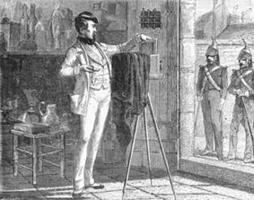
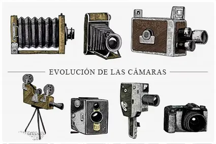
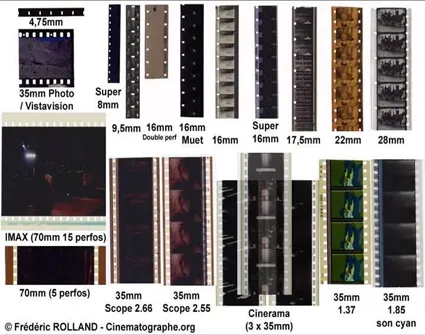
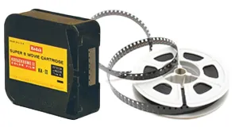

¿QUÉ ES EL SUPER 8?
Los orígenes de la fotografía y del cine se remontan al siglo XIX, cuando distintos inventores y científicos comenzaron a experimentar con materiales sensibles a la luz capaces de fijar imágenes de forma permanente. Aquellos primeros procedimientos fotográficos evolucionaron lentamente hasta desembocar en el desarrollo del celuloide, un material flexible y transparente que revolucionaría tanto la fotografía como el nacimiento del cine.

A finales del siglo XIX, pioneros como George Eastman —fundador de Kodak— impulsaron la utilización de película enrollable, mucho más práctica que las antiguas placas fotográficas. Poco después, inventores y cineastas como Edison o los hermanos Lumière adaptarían este soporte flexible a las primeras cámaras cinematográficas.

Diversos formatos de película en celuloide
Durante décadas, el cine quedó reservado prácticamente a estudios profesionales y grandes productoras debido al enorme coste de cámaras, película y proyectores. Sin embargo, con el paso del tiempo comenzaron a aparecer formatos más pequeños y asequibles destinados al ámbito doméstico y amateur.

Uno de los más populares fue el 8 mm, presentado por Kodak en 1932. Años más tarde, en 1965, la propia Kodak lanzó el Super 8, una versión considerablemente mejorada que ofrecía una imagen de mayor calidad, cartuchos más fáciles de cargar y cámaras más modernas y compactas.

El Super 8 fue concebido principalmente para el cine doméstico y amateur, aunque terminó siendo utilizado también por artistas experimentales, estudiantes, pequeñas productoras e incluso algunos cineastas profesionales. Su textura característica, el grano visible de la película y la forma particular en que captaba la luz acabarían convirtiéndose con el tiempo en parte de su encanto visual.
A diferencia del vídeo digital actual, el Super 8 utilizaba película fotoquímica real. Cada fotograma quedaba físicamente impresionado sobre una banda de celuloide que luego debía revelarse químicamente antes de poder proyectarse. Esto hacía del proceso algo mucho más lento y costoso, pero también más artesanal y casi mágico para quienes vivieron aquella época.